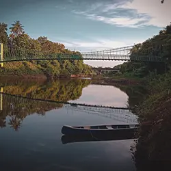

01.Pandalam Palace

The Pandalam family was an off-shoot of the mighty Pandya dynasty, and in spite of being a small faction, commanded great wealth and respect in what is now modern Kerala, albeit thousands of years ago. The Pandalam Palace is maintained in their memory and contains mixed influences of Pandya and Malabar architecture. The Palace is considered the childhood home of Lord Ayyappa, and is one of the foremost Pathanamthitta tourist places.
Top tip: There are a lot of strict rules you need to follow if you want to visit the Pandalam Palace, so consult someone from the local tourism board.
02.Aranmula
Aranmula, a UN heritage site, is famous for two things - the boat race and the Aranmula Parthasarathy Temple. Then, you can also buy an Aranmula Kannadi, an intricately-designed metal mirror made using a secret method that’s been passed down from over generations. It’s said to have a healing influence. Next, try and plan your trip during the Vallasadya, which is a huge 70-item feast celebrating the bravery and physical might of the oarsmen who participate in the boat festival. There’s always another story around the corner in Aranmula, making it one of the best places to visit in Pathanamthitta. If you want to get in on the snake boat race, it’s best to make your bookings in advance at one of the many heritage lodges available in the area. To book your stay, visit hotels.intermiles.com, and earn miles for every completed stay.
03.Thriveni Sangamam
Hindus believe that rivers originating from holy places have a cleansing effect, and a dip in one will erase all the sins in the past. Now, that depends on how much of a believer you are, but at Thriveni Sangamam, there’s one thing for sure - it’s one of the most breathtaking places to visit in Pathanamthitta. It is a confluence of three rivers - the Pamba River Manimala River and the Achankovil River, all deeply connected with Sabarimala. A dip into the refreshing waters will definitely wipe away your tiredness, and maybe, a few sins here and there. Top tip - Carry your own food and keep your belongings close, as pickpockets are quite common.